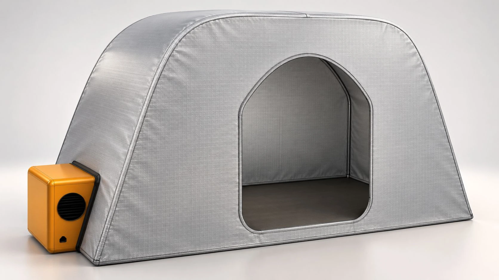
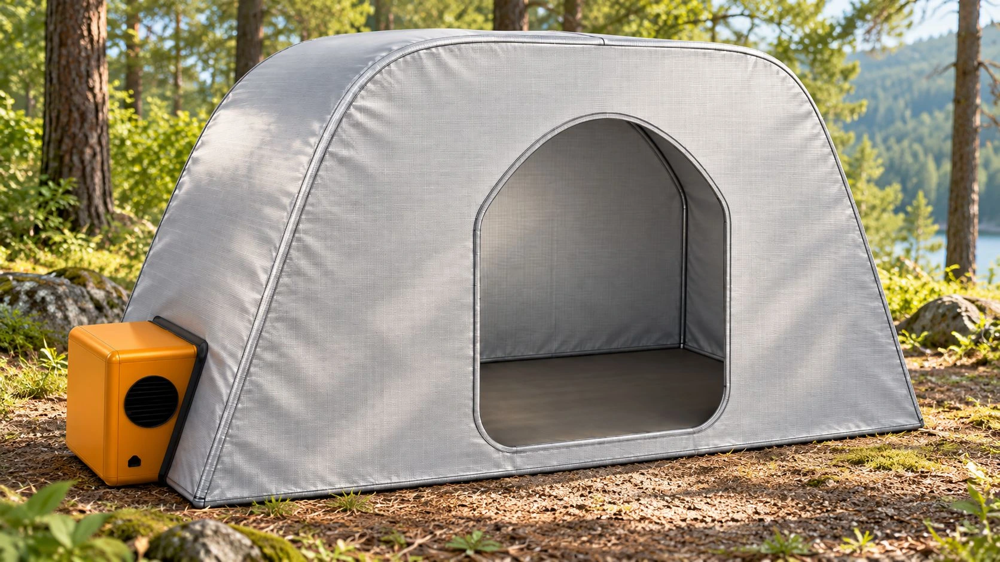

Reflect the heat.
A reflective exterior and thin insulation are intended to reduce heat gain. Materials are still being evaluated.
Meet the Portable Personal Cooling Shelter. A one-person shelter with a planned exterior AC module, designed to bring cooled breaks closer to outdoor crews. Requires compatible external power; a generator is not included.
Product in development / MESA Idea Accelerator 2026

For crews working away from roads and buildings, the nearest cooled space can be a long way from the job. Shade helps with sun exposure, but it does not actively cool the air.
Our idea is straightforward: bring a small, purpose-built cooling shelter closer to the work, wherever a compatible electrical supply is available.
See the thinking behind it
A reflective exterior and thin insulation are intended to reduce heat gain. Materials are still being evaluated.
An exterior compressor AC module is planned to cool the enclosed rest area, with heat discharged outdoors.
A collapsible frame and modular cooling connection guide the design. Full-system carry and setup tests are next.
Explore our actual Fusion CAD model.
Rotate the shelter, choose a view, and select a feature to learn what is taking shape.
The shelter and cooling module work together. The electrical supply stays external.
Assemble the frame and enclosure, anchor it, and connect the externally supported AC module.
Use an appropriate crew-owned generator or other electrical supply. Final electrical ratings are still being specified.
The planned AC recirculates cooled shelter air while a separate outdoor circuit releases heat outside.
Conceptual air paths, not a component layout. Fresh-air exchange and ventilation remain part of the engineering work.
Our starting point is the employers and outdoor crews whose experiences shaped the idea.
Forestry crews may work far from existing cooled spaces. We are exploring a compact rest shelter that can be placed closer, wherever compatible external power is practical.
A clear starting point for a full-size prototype. These are design decisions and provisional dimensions, not validated commercial specifications.
Read the current design plan40 in peak height · Subject to CAD confirmation and full-size fit testing
Workers described remote sites reached on foot and cooling breaks taken in vehicles. Their feedback helped us prioritize a compact rest space, practical assembly, and cooling closer to the job.
worker interviews
Recorded in our team presentation
Worker inputRemote sites reached on foot
Design responseCompact, one-person shelter
Next checkComplete carry mass and packed size
Worker inputHeat illness over multiple workdays
Design responseReflective enclosure and active cooling concept
Next checkFull-size thermal and power measurements
Worker inputCooling breaks taken in vehicles
Design responseA cooled rest location nearer the work
Next checkPlacement, power access, and supervised feedback
Source: team worker interviews, summarized in our 2026 pitch presentation. Accounts are reported experiences, not measured product outcomes.
Worker interviews and iterative concept feedback.
Fusion design and a 1:12 physical model.
Check posture, doorway, placement, and exit.
Build the full-size shell around a factory-sealed AC system.
Check unoccupied cooling, power, failures, setup, and carryability.
Supervised user feedback after safe operation is reviewed.
We are looking to connect with employers, future pilot partners, and supporters as we work toward a functional prototype.
Start a conversationPreliminary direct-sale range
Planning estimate for the shelter and AC system. Final pricing depends on development, supplier quotes, and validation.
External generator, taxes, and delivery excluded.
In development · Not currently available to orderWe are a student team participating in MESA, building around a practical question: how can a cooled break space get closer to the worker?
Electrical Engineering
Mechanical Engineering
Mechanical Engineering
Computer Science
Not yet. Fusion CAD and a 1:12 model are complete. Full-size fit testing and functional cooling validation are next. The pricing shown is an early planning estimate.
The current baseline is a plug-in system using a compatible external electrical supply, such as a crew-owned generator. A battery, solar package, and generator are not included. Final electrical requirements have not been fixed.
Full-size performance has not been measured. The team has proposed cooling and cooldown targets in the design plan, but they are not achieved specifications. Functional testing will establish performance and operating limits.
Portability and practical assembly guide the design. Complete system weight, packed size, carryability, and setup time still need testing. The generator remains a separate external requirement.
It is intended for one adult taking a short break. Full-size testing must confirm comfortable posture, entry, and immediate exit. Employers would need to assess capacity and placement for their own crews.
No. It is a cooling-shelter concept, not a validated smoke refuge or heatstroke treatment system. Its intended role is to support a workplace rest plan alongside hydration, observation, training, and emergency procedures.
Interested in the product, future pilot opportunities, or supporting our prototype? Tell us what brings you here.
This form prepares an inquiry on your device. It does not send or store your information with our team.
Nothing has been sent. Download a copy to keep or share with the team yourself.